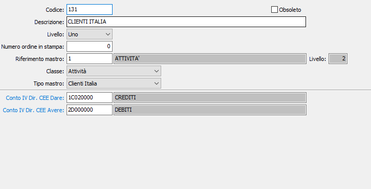

Mastri
Ogni mastro prevede un codice di otto caratteri alfanumerici, a libera scelta dell’utente. È obbligatorio indicare, dopo il codice e la descrizione, la “classe” del mastro scegliendo fra Attività, Passività, Costi, Ricavi, Conti d’ordine attivi, Conti d’ordine passivi, Conti di servizio (Stato patrimoniale iniziale o Bilancio di apertura, Stato patrimoniale finale o Bilancio di Chiusura).
È altresì necessario indicare, ove ne ricorra l’esigenza, specificare il “tipo mastro”. In particolare omettere l’indicazione di tipo mastro “Clienti Italia”, “Clienti estero”, “Fornitori Italia” e “Fornitori estero” in corrispondenza dei rispettivi mastri determina l’impossibilità di utilizzare tali mastri per il caricamento dei singoli clienti e fornitori.
Prima di passare all'illustrazione dei vari campi, va ricordata la convenienza, per le aziende tenute a presentare il bilancio secondo la struttura della IV Direttiva CEE, di riclassificare i mastri indicando la corrispondente voce del Piano dei conti IV Direttiva CEE. Per tutti i mastri Economici e per la maggior parte dei mastri Patrimoniali la riclassificazione si ottiene inserendo il corrispondente codice del Piano dei Conti IV Direttiva CEE nel campo “Conto IV Direttiva CEE Dare”. Solo per taluni conti patrimoniali (Banche, Clienti, Fornitori, Debiti/crediti tributari e previdenziali, ecc) che vengono riclassificati in voci diverse nel bilancio IV Direttiva CEE a seconda del “segno” del saldo di fine esercizio, occorre compilare anche il campo “Conto IV Direttiva CEE Avere”. Ad esempio, i conti correnti bancari riferiscono alla voce attiva “Depositi bancari e postali” del bilancio a norma CEE se presentano un saldo dare, mentre riferiscono alla voce passiva “Debiti verso banche” se presentano un saldo avere. Occorre quindi che il codice delle corrispondenti voci venga coerentemente inserito nei due campi.
Se la ditta utilizza un collegamento ad un piano dei conti esterno sarà presente anche il codice del piano dei conti esterno specifico da associare al mastro affinché possa essere proposto automaticamente durante il caricamento dei sottoconti/clienti/fornitori.
Se la Ditta è configurata in contabilità Semplificata o in contabilità Professionisti, vengono disabilitati i campi relativi ai riferimenti alla IV Direttiva CEE per evidente inutilità di trattamento. Viceversa diventa rilevante, ai fini della produzione del Prospetto dei redditi, la riclassificazione in base alla nuova tabella Voci prospetto reddito. Pertanto, in tali configurazioni, nella manutenzione mastri si sostituiscono ai riferimenti IV Direttiva CEE i campi relativi al quadro e al rigo prospetto redditi, affinché possano essere proposti automaticamente durante il caricamento dei sottoconti/clienti/fornitori.

CODICE MASTRO: codice alfanumerico di otto caratteri, a libera scelta dell’utente. Sul campo sono attive le funzioni di ricerca (F9) sulla tabella stessa.
DESCRIZIONE: campo alfanumerico di 50 caratteri per la descrizione del mastro.
LIVELLO: indica il livello di appartenenza del mastro all'interno del piano dei conti. Il livello uno indica i mastri a cui devono essere collegati i sottoconti; i livelli superiori indicano mastri di riferimento come ad esempio Attività e Passività.
NUMERO D’ORDINE IN STAMPA: indica il numero d'ordine valido per la stampa del piano dei conti e del bilancio a sezioni divise.
RIFERIMENTO MASTRO: indica il mastro di appartenenza del mastro corrente, dovrà avere un livello superiore a quello indicato nel campo precedente.
CLASSE: combo box per identificare la classe del conto. Valori possibili: Attività, Passività, Costi, Ricavi, Conti d'ordine attivi, Conti d’ordine passivi, Conti di servizio.
TIPO MASTRO: combo box, significativo solo per i mastri patrimoniali, per identificarne la tipologia. Valori possibili:
|
Normale |
|
|
Clienti Italia |
Solo per mastri clienti |
|
Clienti estero |
Solo per mastri clienti |
|
Consociate italia debitrici |
Solo per mastri clienti |
|
Consociate estero debitrici |
Solo per mastri clienti |
|
Fornitori italia |
Solo per mastri fornitori |
|
Fornitori estero |
Solo per mastri fornitori |
|
Consociate italia creditrici |
Solo per mastri fornitori |
|
Consociate estero creditrici |
Solo per mastri fornitori |
|
Banche |
Mastri banche, se interessa gestire la data di valuta |
|
Cespiti |
Mastri relativi ai cespiti, solo se attivo il modulo Gestione Cespiti |
RIFERIMENTO IV CEE DARE: codice alfanumerico di 8 caratteri, presente nella tabella dei Conti IV Direttiva CEE, che consente la riclassificazione del mastro nel bilancio a norma CEE. Sul campo sono attive le funzioni di ricerca (F9) e manutenzione (CTRL+W) sulla tabella stessa.
RIFERIMENTO IV CEE AVERE: codice alfanumerico di 8 caratteri presente nella tabella dei Conti IV Direttiva CEE La compilazione di questo campo è richiesta solo nel caso in cui il mastro in esame riferisca a voci diverse di bilancio IV Direttiva a seconda del segno del saldo. Sul campo sono attive le funzioni di ricerca (F9) e manutenzione (CTRL+W) sulla tabella stessa.
Si tenga presente che possono esistere più mastri clienti e più mastri fornitori. In particolare è opportuno che i “percipienti ritenute d’acconto”, se è attiva tale procedura, riepiloghino ad uno specifico mastro di tipo “fornitori Italia”, se italiani, o ad un mastro di tipo “fornitori estero” se non residenti.
Contabilità semplificata/professionisti
QUADRO PROSPETTO REDDITO: codice alfanumerico di 3 caratteri per indicare il quadro del Prospetto del reddito in cui il saldo del conto in esame deve essere riepilogato. L’assenza del codice determina la mancata proposizione automatica all’atto della manutenzione delle anagrafiche sottoconti/clienti/fornitori. Sul campo sono attive le funzioni di ricerca (F9) e manutenzione (CTRL+W) sulla tabella stessa.
RIGO: codice numerico di 3 caratteri, correlato al valore del campo precedente, per indicare il rigo del Prospetto del reddito in cui il saldo del conto in esame deve essere riepilogato. L’assenza del codice determina la mancata proposizione automatica all’atto della manutenzione delle anagrafiche sottoconti/clienti/fornitori.
SEZIONE REGISTRO CRONOLOGICO: Visualizzato e manutenibile solo se la Ditta è configurata in contabilità professionisti ordinaria. L’informazione, unitamente a Quadro Prospetto Reddito e Rigo, è funzionale fondamentalmente alle anagrafiche clienti e fornitori in cui queste informazioni, essenziali ai fini del trattamento sui registri e sul prospetto del reddito, non vengono visualizzate ma caricate per default in tabella. Definisce la sezione del registro cronologico in cui devono essere allocati gli importi relativi al sottoconto in esame. Valori ammessi: Nessuno; Conti finanziari; Conti economici; Altri conti
CODICE PDC BILANCIO ESTERNO: codice che individua il conto del piano dei conti esterno da associare al mastro. L’assenza del codice determina la mancata proposizione automatica all’atto della manutenzione delle anagrafiche sottoconti/clienti/fornitori. Sul campo sono attive le funzioni di ricerca (F9) e manutenzione (CTRL+W) sulla tabella stessa.